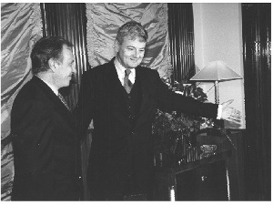
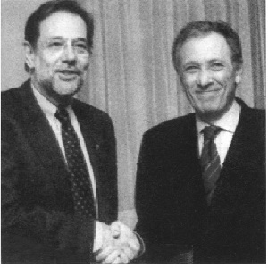
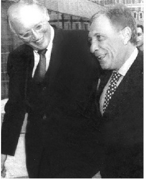

1999 süresince, ab’ye ve ülkelerine mesaj vererek, yıl sonundaki zirvede Türkiye’nin önünü açacak politikalar geliştirilip uygulanarak çalışmalar sürdürüldü. Bunlar, belirli bir programın, zamanlamanın, takvimin çerçevesinde yapılmaktaydı. Üye ülkelerle tek tek uğraşılıyordu. Türkiye’de basına verilen demeçler, konferanslar, konuşmalar, aynı zamanda ab ülkelerine yönelik olarak öngörülmekteydi. Özet çevirileri yapılarak ab ülkelerinin Ankara’daki elçiliklerine, yabancı basının temsilcilerine ulaştırılmaktaydı.
Dışişleri Bakanlığı’ndaki beş yıllık yönetimim süresinde, yazdığım üç belgenin etkili olduğuna inanırım. Bunların ilki, Temmuz 1997’de, göreve gelişimden on beş gün sonra basın toplantısıyla açıkladığım ‘ilkeler belgesi’dir. Bu kitabın ilk cildinde yer verdiğim bu açıklamam, beş yılın dış siyaset rotasını çizmiştir. İkincisi, geçen bölümde yer verdiğim, Lüksemburg öncesi (Kasım 1997) Avrupa ve abd basınında yayınlanan ab’ye ilişkin makaledir. Üçüncüsü, 13 Eylül 1999’da, Brüksel’de, 15 ab üyesi ülkenin dışişleri bakanının davetlisi olarak kendilerine yaptığım konuşmadır.[10]
Bu konuşmanın üzerinde günlerce çalıştım; metin daha sonra bütün ilgili ülke temsilciliklerine, yabancı basın kuruluşlarına dağıtıldı. Helsinki’deki olumlu sonucu izleyen günlerde, bazı ab dışişleri bakanları, kararlarının biçimlenmesinde benim yaptığım bu konuşmanın da etkisi olduğunu belirtmişlerdi. 15 ab üyesi ülkenin dışişleri bakanlarına yaptığım konuşmada, şunları anlatmıştım:
a) Türkiye, Kendi Özgün Katkısını ab’ye Getirecektir
I. ... Başkan Halonen’e ve tüm meslektaşlarıma, beni bu çalışma yemeğine davet ettikleri için teşekkür etmek istiyorum. Sizlere hitap etmek benim için hem bir onur hem de bir zevktir.
Türkiye ile Avrupa Birliği arasındaki ilişkileri tarih boyutunda ele almaya çalışacağım. Daha sonra, bazı ortak ilgi alanlarımıza değineceğim. Nihayet, günümüzü yorumlayacağım.
Uzun tarihimiz, hem Batı, hem Doğu ile süregelen bir etkileşimde biçimlendi. Ülkemiz ve halkımız, uygarlıkların kesiştiği bir bölgede bulunuyor. Tarihsel olarak, kıtalararası ticaret yollarının geçtiği, düşünce hareketlerinin ve inançların oluştuğu, birbiriyle temas ettiği, dünyaya yayıldığı geniş bir coğrafyada yaşadık. Bu özelliklerimiz nedeniyle, dış çevre, dış dinamikler ve Avrupa ile kâh çatışmalı, kâh uyumlu olan etkileşim, tarihsel gelişmemizin belirleyici etkenleri arasında yer aldı. Türk-Osmanlı varlığı, özellikle 15., 16. ve 17. yüzyıllarda Avrupa’ya yeni idealler ve ileri sosyal ilişkiler taşıyabilmiştir. Feodalizmin, hoşgörüsüzlüğün ve kitlesel sömürünün hüküm sürdüğü bir dönemde, bu yeni düzenle beraber insani değerler, hayli eşitlikçi, etkin ve ileri bir örgütlenme, değişik bir yapılanma Batı’ya ulaştırılmaktaydı.
Bu yeni uygarlık ve onun ahlâkî değerleri, Avrupa’nın Ortaçağ’dan, Modern Çağ’a geçişine katkı sağlamıştır. 16. yüzyıldan başlayarak, ezilen etnik ve dini grupların sığındığı ve korunduğu bir ülke özelliğini Türkiye’ye vermiştir. Türkiye bu rolünü İkinci Dünya savaşı sırasında yeniden üstlenmiştir.
Modern çağlar yaklaşırken, Batı ile olan tarihsel etkileşimin, Türkiye’nin 19. ve 20. yüzyıllardaki kurumsal reformlarına olumlu dış dinamiklerin katkısını getirdiği görülmektedir.
Türkiye Cumhuriyeti’ni kuran liderlerin, Batılı işgal güçlerine karşı çarpıştıkları savaş alanlarından çıkıp geldiklerinde, demokratik bir toplum ve laik bir cumhuriyet oluşturmada Batı modellerinden esinlenmeleri ilginç bir husustur. Bu bizim pragmatik anlayışımıza dikkat çekmektedir; aynı zamanda, Türkiye’nin, geçmişteki sorunları aşarak geleceği yaratmak yeteneğine tanıklık etmektedir.
II. Türkiye’nin tarihsel gelişimi, çok boyutlu özellikleri, Doğu kadar Batı değerlerini de özümsemiş olması, çeşitli inanç ve kökenleri barındıran uygarlığı, ona eşsiz bir kimlik kazandırmıştır.
Kendimizi hem Avrupalı, hem de Asyalı olarak görüyor ve bu çoğulluğu bir zenginlik olarak değerlendiriyoruz. Bu nedenledir ki, kimliğimizin Avrupalı boyutu sorgulandığında, bunu yadırgıyoruz:
Avrupalı olmak ‘tarihi’ ve ‘coğrafi’ bir tanım ise, tarihimizin yedi yüzyılını Avrupa’da, bir Avrupa ‘gücü’, devleti olarak yaşadık ve halen yaşamaya devam ediyoruz. Tarihimiz, örneğin Bursa, Konya, Diyarbakır ve Şam’da olduğu kadar, İstanbul, Edirne, Manastır, Kosova, Bosna’da şekillenmiştir. Tarihimizin uzun bir kesitinde, coğrafyamızın önemli bölümü Avrupa kıtasında yer aldı; nispeten küçülmüş olmakla beraber bugün de yer alıyor.
Avrupalı olmak ‘kültürel’ bir tanım ise, iki farklı durum söz konusu: Eğer ‘Avrupalı’ olmak kavramı dinsel bir ölçüyle tanımlanırsa, eğer AB bir ‘Hıristiyan Kulübü’ ise, o zaman biz bu tanıma uymayız. Yok eğer ‘Avrupa Kültürü’, AB tarafından resmen iddia edildiği gibi, ‘demokrasi’, ‘insan hakları’, ‘hukukun üstünlüğü’, ‘cinsiyet eşitliği’, ‘laiklik’ gibi faktörlerle tanımlanırsa, o zaman, bazı konularda ilave ilerleme ihtiyacına rağmen, 75 yıldır bu çağdaş ‘Avrupa Kültürü’nü paylaşıyor ve bu kültüre katkıda bulunuyoruz.
Konunun daha iyi anlaşılması için ‘Avrupa Kültürü’nün birkaç unsurunu irdelemek istiyorum:
Kadın-erkek eşitliği, kadınlara oy hakkı tanınması, laiklik, bireyin toplumda yükselme imkânı gibi demokrasinin çeşitli alanlarında Türkiye, Avrupa’nın önde gelen ülkelerden biridir. Buna rağmen, yazar, politikacı ve aynı zamanda bir Bakan olarak, demokratik gelişim sürecimizin belirli noktalarında gecikmelerin olduğunu her zaman söyledim. Bu çerçevede, bize yöneltilen bazı eleştirilerin hareket noktalarının haklı olduğunu da ifade ettim. Ancak, bazen yol açtıkları genellemeler, vardıkları saptırılmış sonuçlar, biçimlendirdikleri çarpıtılmış ve abartılmış görüntüler haklı ve doğru değildir.
Bir mazeret olamamakla birlikte şurası kesindir ki, demokrasimizin bazı yönlerini geliştirirken karşılaşılan güçlüklerin başlıca kaynağı, hedef olunan korkunç terör dalgasıdır. Son 15 yıl süresinde teröristler binlerce sivili öldürmüşlerdir. 128 ilkokul öğretmeninin gruplar halinde kurşuna dizilmesi gibi olaylar meydana gelmiştir. Başbakan Bülent Ecevit’in de açıkladığı üzere, terörizmin kısıtlamalarından ne ölçüde kurtulursak, demokratik reformların ivmesi o kadar güçlenecektir. Terörizmin üstesinden gelme süreci içindeyiz. Bazı olumlu gelişmeler şimdiden görülüyor:
Parlamento, rekor düzeyde bir çalışmayla son üç ayda iki anayasa değişimini ve reform yollarını açan 62 yasa değişimini gerçekleştirdi. Bu bağlamda, Devlet Güvenlik Mahkemelerinin yapısı yenilenerek tamamen sivil yargıçlara bırakılmıştır (18/6/1999). Tutuklu ve mahkûmlara kötü muamelede bulunanlar için öngörülen cezalar özlü bir şekilde arttırılmıştır (26/8/1999). Terörizm ve ayrılıkçı hareketleri basın yoluyla teşvik etmeleri nedeniyle hüküm giymiş veya bu iddiayla yargılanmakta olan kişilerin ceza ve mahkemeleri ertelenmiştir (28/8/1999). ‘Pişmanlık Yasası’ uygulamaya geçirilmiş ve terör örgütü ve eylemlerinde yer almış, ancak öldürme ve silahlı saldırılara katılmamış olanların elebaşı konumunda bulunmamaları kaydıyla kısmi bir aftan yararlanmaları imkânı doğmuştur.
Açıkçası, terörle mücadelesinde Türkiye başarı kazanamasaydı, terörizmin etkinliği kırılamasaydı, o zaman, söz konusu demokratikleşmeyi gerçekleştirmek fevkalade zor olurdu. Terörün en azgın dönemini yaşadığı bir yıl kadar önce bugünlerin demokrasi girişimlerinden söz edilmiş olsa, inanan kimse bulunamazdı. Ayrıca, halen gerçekleşmekte olan anlayış ve yasal değişikliklerinin, devam eden bir süreçte yer aldıklarını ve öncelikle Türkiye’nin iç dinamiklerinden kaynaklandıklarını da belirtmeliyim.
Öte yandan, bana ilginç gelen bir gözlem de şu: Bazı Batı Avrupa çevreleri Türkiye’yi o kadar yanlış tanıyıp, her şeyin o kadar kötü olduğunu varsayıyor ki, bizim için sıradan gelişmeleri büyük reformlar, çarpıcı gelişmeler diye niteliyor. Cumhurbaşkanının, bazı Güneydoğu kentlerinden seçilmiş belediye başkanlarını kabul ettiği toplantıyı örnek gösterebilirim. Belediye Başkanlarının çok olumlu nitelendirdikleri bu toplantıda Cumhurbaşkanı, görevlerini anayasal hak ve yükümlülükleri çerçevesinde yaptıkları sürece, hangi kentlerden seçilmiş olursa olsun Belediye Başkanları arasında hiçbir farkın bulunmadığına dikkat çekmiştir. Bu çağrı ve Cumhurbaşkanı’nın zaten anayasal görevi ve konumu gereği gösterdiği eşit yaklaşım, Batı Avrupa basınında sanki çok anlamlıymış gibi büyütülmüştür. Ayrıca, söz konusu kent ve ilçe belediyelerinin, GAP projesi kanalıyla büyük yatırım fonlarının tahsis edildiği ve özel sektöre yatırımda bulunması için özel teşviklerin verildiği bir bölgeyi oluşturduğunu da ifade etmeliyim.
III. AB ile Türkiye arasındaki yanlış anlama nedenlerinden biri de, değişik tarihsel deneyimlerde biçimlenmiş değişik algılamalar arasındaki farklılıktır.
Türkiye’nin sosyal dokusunun irdelenmesine ve anlaşılmasına çalışırken, ırk esasına dayalı kriterlerin, belirleyici ve temel araçlar olarak Batılılarca kullanılması, yanlış varsayımlara yol açmaktadır.
Biz, vatandaşlarımızın etnik kökenlerini önemli bir etken olarak görmemekteyiz. Bizde kimse, bir başkasının etnik kökenini önemsemez. Osmanlı ve Cumhuriyet Türkiyesi’nin binlerce yıllık bir coğrafyası bulunduğu için biz Türkler çeşitli kökenlerden ve kültürlerden gelmekteyiz.
Irk kavramının, belirleyici bir unsur ve azınlık tanımının başlıca özelliği olarak kullanılması bizim gerçeklerimize ve algılamalarımıza uymamaktadır. İslâmiyet’in Osmanlı yorumu ve uygulamasının kültürel kimliğin temellerinden başlıca birini oluşturduğu ve Devlet’in, yüzyıllar boyunca çeşitli ırkları birlikte tuttuğu bir Türkiye’de, ırk, hiçbir zaman sosyal veya politik bir kategori olmamıştır. Bu çerçevede, başlıca belirleyici unsur, hep hoşgörü ile yaklaşılan din olmuştur. Farklılıklar, din kavramları içinde tanımlanmıştır; yani, Müslümanlar ve Müslüman olmayanlar. Öte yandan, ister Saraybosna’da, ister İstanbul, Kosova, Kayseri, Kahire, Halep veya başka bir yerde yaşasın, Osmanlı’nın Müslüman tebaası, etnik kökeni ne olursa olsun, tümüyle eşit statüye sahip olmuşlardır. Müslüman tebaanın arasında azınlık-çoğunluk ayrışması yoktur.
Bu geçmiş, bugünkü algılamalarımızın da kaynağını oluşturmaktadır. Çağdaş Türkiye, kendisini bu ayırımcılık-karşıtı geleneğinin doğrultusunda şekillendirmiş ve bunu modernleşme süreci içinde geliştirmiştir. Batı Avrupalı akademisyenler kendi özgül sosyokültürel tecrübelerine dayalı sosyal analiz metotlarını Türkiye gibi bir ülkeye uyguladıkları zaman yanlış sonuçlara varmaktadırlar. Sosyal bir faktör olan ırk olgusunu abartmaktadırlar. Bu, kendi toplumlarının gelişme sürecindeki özellikleri bakımından yanlış değildir. Türkiye’nin gelişme sürecindeki özellikleri bakımından ise yanlıştır. Türkiye tahlillerinde eksik sonuçlara varılmasının nedeni budur. Balkan, Kürt, Kafkasya veya hangi kökenden olursa olsun Müslüman Türklerin, Batı Avrupa tarafından ‘azınlık’ olarak tanımlandıklarını keşfedince bu tanımdan rahatsızlık duymalarının nedeni de budur.
Bu konuda son olarak siyasi bir noktaya değinmek isterim: Şahsen, etnik farklılaşmaya dayalı siyasete ve partilere kesinlikle karşıyım. Bir ülkedeki ırk ayırımlarının özendirilmesi ve vurgulanması tarih boyunca çok olumsuz sonuçlara yol açmıştır. Bu yaklaşımın, yakın geçmişte Bosna ve Kosova’da 200 bin insanın etnik temizliğe kurban verilmesine yol açtığı hatırlardadır; pek de uzak sayılmayacak bir geçmişte ise milyonlarca Avrupalının hayatına mal olduğu unutulmamalıdır.
Bu, tabiatıyla, benim veya bizim, ihtiyaç duyan herhangi bir vatandaşın kültürel veya demokratik ifade özgürlüğüne karşı olduğumuz anlamına gelmemektedir.
IV. Türkiye ile Avrupa Birliği arasında mevcut ilişkiler, Türkiye’nin resmi katılım adayı olarak ilan edilmesi ve nihayet Birliğin üyesi olması konularındaki görüşlerimi sizinle paylaşmak istiyorum.
Türkiye 1963 yılından bu yana Avrupa Birliği ile ortaklık ilişkisi içindedir. Bütün hükümetler, Ankara Ortaklık Anlaşması’nın hedeflerini benimsemiştir. Türkiye’nin adaylığı ve tam üyeliği konusunu düşünürken kendime sürekli yönelttiğim soru; Türkiye’nin Avrupa Birliği’ne ne tür bir katkıda bulunacağı, AB’ye ne sağlayacağıdır; buna karşılık, Türkiye’nin Avrupa Birliği’ne üye olmakla ne kazanacağıdır.
Kazanımlar bakımından, inancım o ki, AB’ye üye olmak Türkiye’ye yeni bir iddia ve hedef sunacaktır; yapısal, siyasal, ekonomik, sosyal, demokratik, ekonomik yaşamının bütün alanlarında, daha yüksek bir mantığa Türkiye’nin ulaşma imkânını genişletecektir. Türkiye’nin uluslararası çevreyle karşılıklı etkileşimini sağlayan tarihsel, kültürel ve coğrafi konumu, olumlu dış dinamiklerin katkısı imkânını arttırmaktadır.
Bu bağlamda, Gümrük Birliği çerçevesindeki ortaklığımızın olumlu yönlerine atıfta bulunabilirim. Türkiye’nin Gümrük Birliği’ne girmesi büyük bir iddiaydı ve aradan sadece dört yıl gibi kısa bir süre geçti. Ancak, bu beraberlik, Türkiye’nin sanayi altyapısını geliştirmesine, ekonomik rekabet gücüne ulaşmasına ve Avrupa Birliği düzeyinde beceriler edinmesine yol açan olumlu bir etken, tahrik, teşvik olmuştur.
Diğer taraftan bu ortaklığın Türkiye’ye getirdiği külfeti ve yarattığı sınırlamaları da görmezlikten gelmiyorum. Türkiye’nin AB üyesi ülkelerle mevcut yıllık ticaretindeki açık yaklaşık 10 milyar dolar düzeyindedir. Bu bağlamda, tartışılması gereken çeşitli kaygı ve önerilerimiz bulunmaktadır.
Bununla birlikte AB’nin ekonomik boyutu ile bütünleşmiş durumdayız. Bu bizim Orta Avrupa’dan Orta Asya ve Ortadoğu’ya uzanan geniş coğrafyada en dinamik ve yüksek düzeyde rekabet edebilen bir ekonomiye sahip olmamızı kolaylaştırmıştır. Şunu da ilave etmeliyim ki, bunu, Avrupa Birliği’nden ekonomik yardım almaksızın ve AB’nin kendi mali yükümlülüklerini hâlâ yerine getirmemiş olmasına rağmen gerçekleştirdik.
Avrupa Birliği’nin siyasi boyutunda da yer almamızı sağlayacak sürecin, daha ileri düzeyde bir rasyonelliğe ulaşılması açısından paralel sonuçlar getireceğine inanıyorum. Bu bağlamda olumlu bir etkileşimin gerçekleşeceğini öngörmekteyim.
Bunun ötesinde, bugün söz konusu süreçten daha iyi yararlanabilecek konumdayız. Çünkü, Parlamentoda sağlam bir çoğunluğu bulunan bir hükümete sahibiz. Bu, Türkiye’de son beş yıldır rastlanmamış bir imtiyazdır...

İsmail Cem Alman Dışişleri Bakanı Fischer’le Berlin’de. 1999.
V. Türkiye’nin AB’ye sağlayabileceği, değişik türden bir tarihsel deneyimin katkısı olacaktır; bu sadece geniş bir coğrafyanın ve özgün bir kültürün temsilcisi olan bir ülkenin sağlayabileceği boyuttaki bir katkıdır. Bu katkı, aynı zamanda, cumhuriyetçi ve demokratik gelişiminin Türkiye’ye sağladığı iddiasının ve bir ‘model’ olmak gibi eşsiz özelliğinin de ürünüdür: Çoğulcu demokrasi, laiklik, hukuk devleti, insan hakları, kadın-erkek eşitliği gibi ideallere ve uygulamalara sahip ve nüfusun çoğunluğu Müslüman olan tek ülke sıfatıyla, Türkiye, ileri düzeyde bir çağdaşlaşma paradigması yaratmanın imtiyazını taşımaktadır; dünyanın her yanında, demokrasiyi ve modernleşmeyi arzulayan geniş halk kitleleri için çok önemli bir çekim merkezidir.
Öte yandan, Soğuk Savaş ertesinde oluşmuş siyasi çerçeve birçok bağımsız devletlerin doğuşuna tanıktır. Neredeyse tümü Balkanlar, Kafkaslar veya Orta Asya’da bulunan bu ‘yeni’ devletlerle, Türkiye’nin, ortak tarih, ortak dil ya da kültürel bağları bulunmaktadır. Bu durum, Türkiye’ye tarihsel ve kültürel boyutları olan yeni bir uluslararası çevre sunmaktadır. Bu devletler hızlı bir şekilde ekonomilerini yeniden yapılandırma ve dış yatırıma, rekabete açma yönünde çalışmalara başlamışlardır. Türkiye, bu coğrafyanın köklü bir aktörü olarak, söz konusu devletlerin ekonomik yapılanmalarında hayati bir ortak konumuna gelmiştir. Türkiye, oluşum halindeki Avrasya gerçeğine siyasi ve ekonomik bir merkez sağlamaktadır; AB’nin, Doğu’ya açılan başlıca tarihsel, kültürel ve ekonomik köprüsü niteliğiyle jeostratejinin sahnesinde yer almaktadır.[11]
Bununla birlikte, yeni oluşan siyasi coğrafyaların sunduğu yeni imkânlara yönelik politikalarını AB’nin henüz kesinleştirmediği görülmektedir. Bu oluşumların yarattığı büyük fırsatları değerlendirmeyi isteyip istemediği, henüz belli değildir. O çok sözü edilen ‘uygarlıkların çatışması’ tehlikesiyle karşı karşıya bir dünyada, ‘uygarlıkların uyumuna’ katkıda bulunup bulunmamak ve tüm insanlık için daha iyi bir dünya yaratma konusunda daha büyük bir sorumluluk alıp almamak gibi hususlardaki tutumunu AB’nin henüz kesinleştirmediği anlaşılmaktadır
Türkiye, tüm bu konulara olumlu, hattâ bazılarına belirleyici katkı yapmaktadır.
VI. Bu oldukça uzun değerlendirmeyi üç öneriyle tamamlamak istiyorum:
1) İlişkilerimizi geliştirmek için, zaman zaman ortaya çıkan çatışmacı tutumdan karşılıklı olarak kaçınılmalıdır. Genel olarak, karşı tarafın kaygıları, hareket sınırları ve duyarlılıkları göz önünde bulundurulduğu zaman sorunlar daha etkin biçimde çözülebilmektedir.
Birlikte çalıştığımız zaman, Türkiye, AB ve Avrupa için üretken ve yararlı bir anlayış yaratacağımıza inanıyorum.
2) Batı Avrupa, tarihin uzun bir döneminde, Türkiye’yi –Edward Said’in deyişiyle– ‘Öteki’ olarak görmüştür. Türkiye, Batı Avrupa’nın gözünde ‘antitez’, ve ‘dıştaki’ olmuştur. Bu talihsiz ayırımcılığın artık geride bırakılacağını gösteren belirtiler çoğalmaktadır. Bu umutlu eğilimin daha da gelişmesi ortak bir sorumluluk olmalıdır.
3) Son olarak, Helsinki’de adil ve açık bir karara varılmasını beklemekteyim. Türkiye’nin AB’ye aday olarak resmen ilan edilmesi gerektiğine inanıyorum.
AB’nin genişlemeyle ilgili Aralık 1997 (Lüksemburg) kararı Türk kamuoyunda haklı tepkiye yol açmıştır. Türkiye ile diğer 11 ülke arasındaki ayırımcı değerlendirmeyi anlamak zor olmuştur. Bununla birlikte, sonraki AB Zirvelerinde hem sınırlı bir gelişmenin, hem de daha olumlu bir anlayışın ortaya çıktığı görülmüştür. AB-Türkiye ilişkilerinde daha elverişli bir ortam halen geçerlidir. Bundan yararlanılması gerekir.
‘Kopenhag Kriterleri (ölçütleri)’, sadece AB’ye ait olmayan, Avrupa’nın içindeki ve dışındaki yüz milyonlarca insanın ortak değerlerdir. Bu kriterler, paylaştığımız, geliştirdiğimiz ve biz aday veya üye olsak da olmasak da geliştirmeye devam edeceğimiz değerlerdir.
Avrupa için daha aydınlık bir geleceğin varlığına inanıyorum. Türkiye’nin bu geleceğe katkısına inanıyorum.
AB Genel İşler Konseyi çalışma yemeğinde,
15 AB dışişleri bakanına yapılan konuşma, Brüksel,
13 Eylül 1999. İngilizce aslından özetlenerek çevrilmiştir
Helsinki Zirvesi yaklaşırken, bir yandan Türkiye’nin tutumu, tezleri, uygulanan dış siyaset anlatılmaktaydı. Öte yandan, belirli uyarılar yapmaktan da geri kalınmıyordu. Bunlardan belki en önemlisi, eylül ayı başlarında Financial Times gazetesine Lond-ra’da verdiğim demeçti. ‘Helsinki’de olumsuz bir sonuçla karşılaşırsa, Türkiye ab adaylığı talebinden vazgeçebilir’ demiştim. Bunu ‘taktik’ olarak söylemiyordum. O günlerin ortamında, gerçekten, Helsinki’de haksızlığa uğratılmış bir Türkiye’nin, adaylık talebini hiç değilse bir süre dondurması Ankara’da olası görülmekteydi. Böyle bir tavır, ab’nin Avrupa içinde ve abd karşısında prestijinden kaybetmesine yol açabilirdi. İngiliz gazetesi haberi şöyle vermişti:
b) Türkiye Uyarıyor: Adaylık Talebinden Vazgeçeriz
Türkiye, Yunanistan’ın AB yardımı için vetosunu kaldırmasından memnun olmakla beraber, AB üyeliğine resmen aday olarak kabul edilmeyi Helsinki’de son kez denemekte olabileceği hususunda dün uyarıda bulundu.
Türk Dışişleri Bakanı İsmail Cem, ‘Bu iş bizi yordu. Türkiye’nin imajını zedeleyici ve onur kırıcı hale geldi. Helsinki Zirvesi’nde sonuç alınmazsa, adaylığı artık bir daha istemeyebiliriz’ dedi.
Cem, Türkiye’nin adaylık sorununun aralıktaki Helsinki Zirvesi’nde çözülmesi gerektiğini belirtti. Financial Times’a verdiği mülakatta, Cem, Yunan hükümetinin AB yardımını engellemekten vazgeçme kararını memnuniyetle karşılamakla beraber, bunun esasen AB’nin zaten mevcut olan yasal yükümlülüklerini yerine getirmesi yolunda bir adımdan ibaret olduğunu vurguladı.
AB’nin genişlemeden sorumlu komiserliğine aday Günter Verheugen de. Avrupa Parlamentosu Dışişleri Komitesi’ndeki konuşmasında, Aralık Zirvesi’nde Türkiye’nin aday olması yönündeki ümitlere destek verdi.
Verheugen, Türkiye’nin demokratik güçlerini ve Batı ile bağlarını kuvvetlendirmek için bu ülkenin adaylığını desteklediğini ve sorunun, genişlemenin ele alınacağı Helsinki Zirvesi’nde konunun çözüme kavuşturulması gerektiğini belirtti.
Verheugen, bununla beraber, Türkiye’deki halihazır durumun AB’ye giriş kriterlerini karşılamadığını, Türkiye’nin ciddi eksiklikleri olduğunu bildirdi.
Aynı zamanda Federal Alman Dışişleri’nde de görev yapan Verheugen, Federal Alman Şansölyesi Gerhard Schröder ve Türk Başbakan Bülent Ecevit arasında gerçekleşen mektup teatisinin, giriş müzakereleri için başvuran tüm ülkelerin kabul ettiği Kopenhag Kriterleri’ni kabule Türkiye’nin hazır olduğunu gösterdiğini de kaydetti.
David Buchan’a verilen mülakatın haberi, Financial Times,
2 Eylül 1999. İngilizce aslından özetlenerek çevrilmiştir
Helsinki tarihi yaklaşırken, Türkiye’nin tutumu, beklentisi, kararlılığı en açık biçimde ab tarafına ulaştırılmaktaydı. Bu, bazen bir açıklama, bazen uyarı özelliğinde olabiliyordu. Son açıklamalarımı yazılı yapmayı tercih ediyordum. Bunlar, hemen tercüme edilerek Ankara’daki elçiliklere ve yabancı basın temsilciliklerine, uluslararası ajanslara ulaştırılmaktaydı. Önemsediğim bir açıklamayı, Helsinki Zirvesi’nden on gün önce, yazılı yapmıştım. Burada, özellikle Yunanistan sorunu üzerinde durmaktaydım. Çünkü, Türkiye’nin muhtemel adaylığını içine sindiremeyen bazı çevrelerin bu sorunu ve bağlantılı gördükleri Kıbrıs sorununu gündeme taşıyacakları, Türkiye’nin benimsemesi mümkün olmayan ‘şartlı bir adaylık’ önerisi getirmeye çalışacakları anlaşılıyordu. Türkiye’nin nerede durduğunun, hattâ, arkasına önkoşullar iliştirilmiş, ayırımcılıkla bezenmiş bir ‘ab adaylığı’ önerisinin, Türkiye tarafından benimsenmeyeceğinin peşinen bilinmesini istiyordum. Helsinki Zirvesi’nden on gün önce, bu yazılı açıklamayı yaptım. O günlerin Türkiye’si, ab’ye, Zirveye, Türkiye’nin muhtemel adaylığına kilitlenmişti. Zirveden iki gün önce, tüsiad’ın düzenlediği ab’ye ilişkin büyük bir toplantıdaki konuşmamın son bölümünde de, bu yazılı bildiriyi bir kez daha tekrarladım.
On maddeden oluşan açıklamada şu hususlar belirtilmekteydi:
‘Yolumuza AB’siz Devam Ederiz...’
Türkiye’nin, Avrupa Birliği Helsinki Zirvesi’ne dönük tutumu, Yunanistan’la ilişkileri ve bunların yansımaları konusunda, çeşitli haberler yayınlanmaktadır. Bunların bir bölümü gerçeği yansıtmadığı gibi, yanıltıcı da olabilmektedir. Öte yandan, aynı konularda basın temsilcileri bakanlığımızdan bilgi istemektedir. Durumun daha iyi anlaşılabilmesi amacıyla bu değerlendirmeyi yapmaktayım:
1) Türkiye, 1963’ten beri, o zamanki adı ‘Avrupa Ekonomik Topluluğu’ olan Avrupa Birliği’yle ilişkilerini geliştirmek hedefini benimsemiştir. Bu kararlılık, son otuz yedi yılda kurulmuş bütün hükümetlerimizin TBMM’den onay almış programlarında ifade edilmiştir. AB üyeliğinin 1963 Ankara Anlaşması’ndan doğan bir hak olduğu vurgulanmış, bu doğrultuda politikalar izlenmiştir. Nitekim, 1996’da gerçekleşen ‘Gümrük Birliği’, önemli bir aşama olmuştur. Hükümetimiz de, AB ile ilişkilerin geliştirilmesi ve AB üyeliği konusunda aynı kararlılığı sürdürmüştür.
Bütün hükümetlerimizin bu ortak yaklaşımını, Atatürk’ün ‘... çağı paylaşmak’ idealinin bir yansıması olarak nitelemekteyiz.
2) AB üyeliği, Türkiye’nin öncelikli bir amacıdır; bir saplantı değildir. AB boyutunun eksik olması halinde, Türkiye’nin, iddiasında, çağdaşlığında ve demokrasisinde geri kalması söz konusu olamaz; yoluna zaten devam etmektedir. Türkiye, ekonomi, demokrasi, yönetim, hukuk, siyaset gibi alanlarda zaten kendini sürekli geliştirmektedir. AB adaylığı ve üyeliği, bu gelişmeye güç ve hız katacaktır.
3) Türkiye ile AB ilişkileri, AB’nin ‘genişleme sürecine’ ilişkin 1997 Zirvesi’nde, Türkiye’ye adaylık konumunun resmen tanınmayışı nedeniyle sarsıntı geçirmiştir. Önümüzdeki 1999 Zirvesi’nde bu ayırımcılığa son verilmesini Türkiye beklemektedir.
Türkiye, AB’nin Amsterdam Anlaşması ve Kopenhag ölçütlerini benimsediğini esasen açıklamıştır. Bu çerçevede, Türkiye, öteki aday ülkelerle eşit muamele beklemektedir. Türkiye, öteki adaylarınkinden farklı şartları karşılamak, önşartlar kabul etmek durumunda da değildir.
4) Türkiye, AB üyeliği yolundaki gelişmesinin, Türkiye’nin içinde yer aldığı geniş coğrafyanın güvenliğine, istikrarına ve ekonomik büyümesine ciddi katkı sağlayacağı düşüncesindedir. AB’nin sınırlarının –bugün olduğu gibi– Balkanlar’dan ve Ege’den geçmesi, ister istemez, Türkiye ve Yunanistan’ı, bu sınırın iki tarafında karşı karşıya konuşlandırmış olmaktadır. Bu, istenmese de, potansiyel bir karşıtlık durumudur. Türkiye’nin AB adaylığı ve üyeliği, potansiyel karşıtlığı ortadan kaldırarak Balkanlar’da ve Ege’de istikrarın, işbirliğinin güvencesini sağlayacaktır.

İsmail Cem Solana ile.
5) Türkiye ve Yunanistan arasında Ortak Çalışma Komiteleri girişiminin başlatıldığı 1999 Mayısı’ndan bu yana, önemli ve olumlu gelişmeler gerçekleşmiştir. Karşılıklı siyasi irade ve iyi niyet olduğunda, iki ülkenin, aralarındaki sorunları ortak çalışmalarla çözebileceğine ve kalıcı dostluk kurulabileceğine inanmaktayız. Son aylar, bu inancımızı güçlendirmiştir. Bu olumlu sürecin genişleyerek devamını içtenlikle arzu etmekteyiz.
6) Türkiye ile Yunanistan’ın 1999 Mayısı’ndan beri geliştirdiği ilişkiler ileri bir düzeye ulaşmış ve ortaya somut sonuçlar çıkmıştır:
Türk-Yunan ortak komite çalışmalarında mutabakata varılmış bulunan metinler, ‘imza’ aşamasına gelmiştir. Ele alınan konular, ‘ikincil’ değil, önemli konulardır. Özellikle, ‘Örgütlü Suçlar, Uyuşturucu Kaçakçılığı, Yasadışı Göç ve Terörle Mücadele’ konusundaki anlaşma, Türkiye tarafından, ilk günden beri, ilişkilerin gelişmesinde öncelik olarak nitelenmiştir.
Türk-Yunan ilişkilerindeki mevcut olumlu gelişme sürecinin engelle karşılaşmaması durumunda, bu anlaşmalar 1999 Aralık ayının ortalarında imzalanabilecektir. Bu bağlamda, Yunanistan Dışişleri Bakanı’nın ülkemize davet edilmesi, anlaşmaların imza töreninin yapılması, iki ülke arasındaki ilişkilerin geleceği, Avrupa Birliği ve bölge konularında işbirliği imkânlarının değerlendirilmesi öngörülmektedir.
7) Ortak Komite çalışmalarının başlamasından sonra, iki ülke arasındaki ilişkiler, somut sosyal, ekonomik ve siyasal gelişmelere yol açmıştır. İki toplumun sivil kesimleri, sürekli bir diyalog içindedir, karşılıklı ziyaretler, ortak etkinlikler birbirini izlemektedir. İki ülkenin arasındaki ekonomik ilişkiler artmıştır. Ege’deki gerilim ortamı, yerini yumuşamaya bırakmaktadır. Balkanlar’da istikrar için işbirliği yapılmaktadır. Bütün bu gelişmeleri hızlandırarak sürdürmek her iki ülkenin de yararınadır.
8) Türkiye ile Yunanistan arasında, özellikle Ege’de çözüm bekleyen sorunlar mevcuttur. İki komşu ve müttefik ülkenin iki tarafça da kabul edilebilir yollardan bütün bu sorunları zamanla aşarak Ege’yi bir dostluk ve barış denizine dönüştürmeleri mümkündür. İki ülkenin ortak hedefi bu olmalıdır.
Bu hedefe varmak için Ege’de tek taraflı hareketlerden uzak durulmalı, tahrik ve tehditten kaçınılmalı, karşılıklı kaygılar ve çıkarlar dikkate alınmalı, güven ve güvenlik ortamı oluşturulmalı ve bu çerçevede sorunlar barışçı yöntemlerle çözümlenmelidir. Biz bu yönde ortak çalışmaya hazırız. Türkiye’nin Yunanistan’dan herhangi bir toprak talebi bulunmamaktadır. Türkiye, AB’nin ‘Gündem 2000’ belgesinin iki ülke arasındaki sorunların çözümü için uygun yöntemler içerdiğini değerlendirmektedir.
Öte yandan, Avrupa Birliği dönem başkanı Hollanda’nın girişimiyle 1997 Nisan ayında Türkiye ve Yunanistan’ın üzerinde mutabık kaldığı ‘Akil Adamlar Grubu’ çalışmasının, yeniden başlatılabileceği düşüncesindeyiz. Helsinki Zirvesi’nin adaylık kararını alması durumunda harekete geçebilecek Akil Adamlar girişimi, Ege sorunlarına barışçı yöntemlerle çözüm arayışına katkı getirecektir.
9) Türkiye, Kıbrıs konusunu AB ile ilişkilerinin dışında tutmuştur. Türkiye, AB ilişkilerinin Kıbrıs bağlamında değerlendirilmesine kesinlikle karşıdır. Güney Kıbrıs Rum Yönetimi’nin tek taraflı olarak yaptığı AB üyelik başvurusuna ilişkin hukuki ve siyasi itirazlarımız geçerliliğini korumaktadır. Birleşmiş Milletler Genel Sekreteri’nin, New York’ta taraflarla aracı ile konuşmalar başlatmakta olduğu bir dönemde, bu süreci ve kapsamlı çözüm şansını olumsuz etkileyebilecek söz ve davranışlardan kaçınılması, aksine, tarafları eşit biçimde teşvik edici olunması gerektiğine inanmaktayız.
10) Bu düşünceler çerçevesinde, Helsinki Zirvesi’nin hem Türkiye-AB ilişkileri hem de Türkiye ile Yunanistan arasındaki olumlu süreç bakımından önemli bir fırsat yarattığı görülmektedir. Bütün AB ülkelerinin bu fırsatı en iyi şekilde değerlendirmelerini beklemekteyiz.
İsmail Cem‘in yazılı açıklaması, 30 Kasım 1999

İsmail Cem Gunter Verheugen ile Brüksel’de.